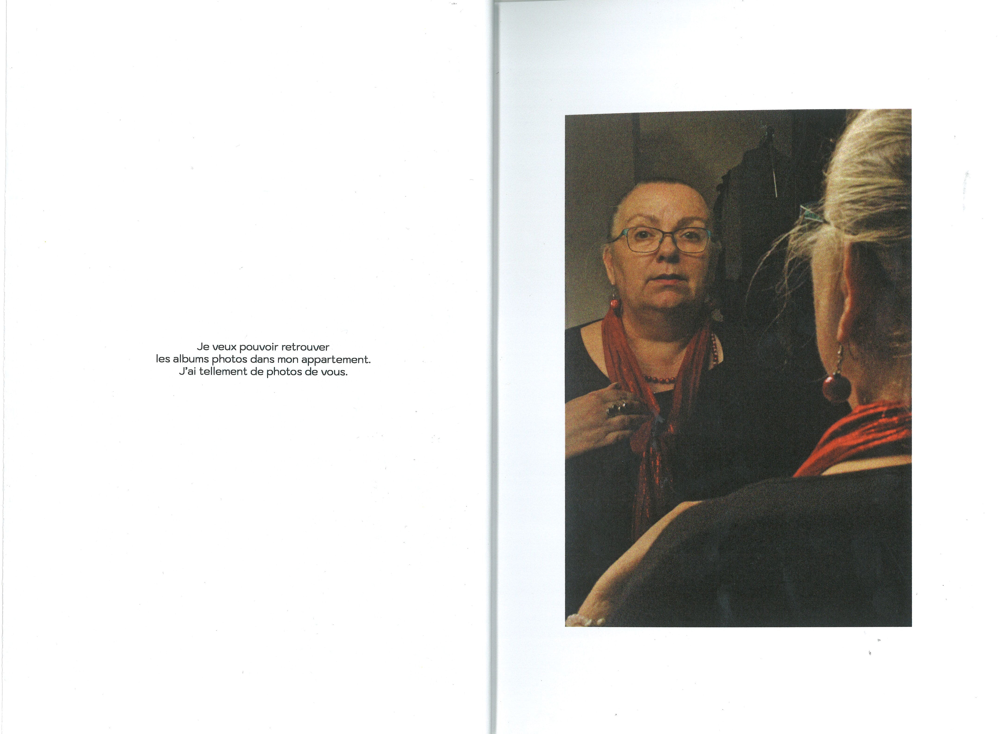
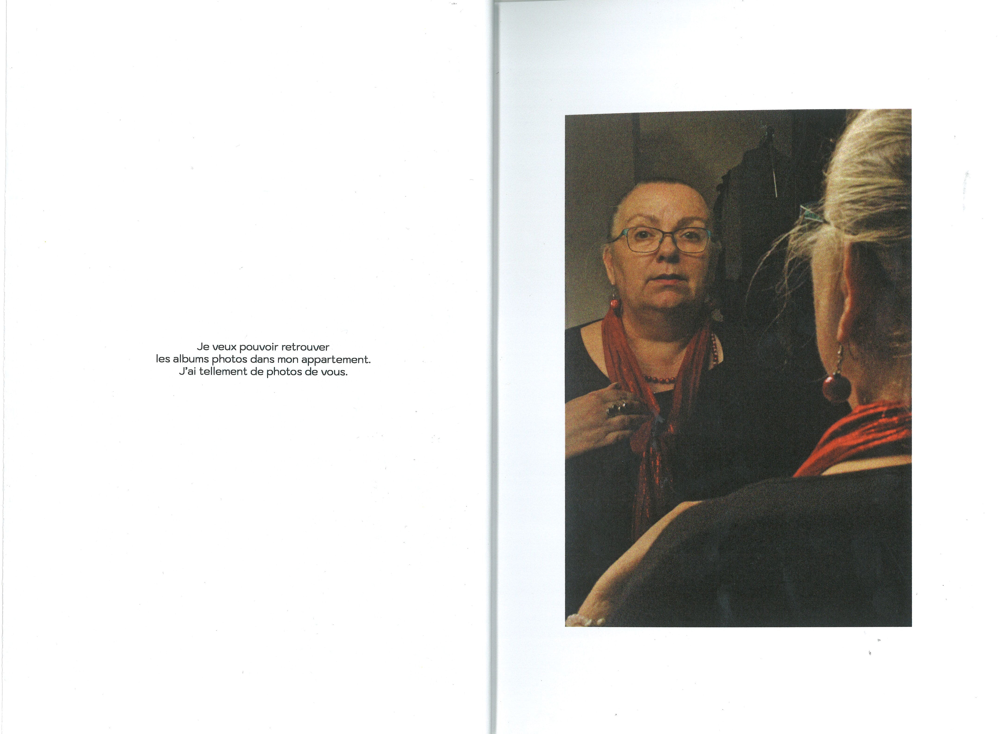

PROJET PHOTOGRAPHIQUE "ÉPHÉMÉRIDE"
Réalisation d'une édition photographique en lien avec le film "Le mur invisible" de Julian Roman Pölsler, explorant les thèmes de la solitude, de l'abandon et de l'acceptation du destin. Le projet aborde la peur commune de la solitude. J’ai photographié ce qui se rapprochait le plus du personnel et intime, explorant deux perspectives sur l'une de mes craintes : le vieillissement, à la fois le mien et celui de ma mère. Les photographies mettent en scène ma mère et moi de différentes manières. J’ai voulu jouer avec le titre en utilisant le concept du calendrier, où l'on arrache une feuille par jour, à la fois pour son sens premier et l'ironie du mot. Pour préserver l'intimité de l'édition et le choix des corps, j'ai ajouté des rabats permettant l'accès à certaines images en plus grand format.

 
